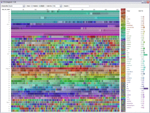

3 New sources of data
3.1 Big data
We have talked about the future of data visualisation in terms of new kinds of display and interaction technologies. As we have discussed another driver for changes in data visualisation is the availability of data. And as data scientists we should be well aware that Big Data is here (see Wikipedia on Big Data).
Some of the reasons for the massive increase in data are social media, higher resolution scientific instruments such as radio and optical telescopes, RFID and other object tagging, remote sensing and wireless sensor networks, software logs, cameras and microphones. Data visualisation is often promoted as one of the ways of handling such Big Data. This certainly has some truth but the immense size of the data sources, terabytes or even petabytes, means that considerable aggregation, filtering and selection is required before any kind of visualisation is possible. Visual analytics with its human-in-the-loop exploration model using using both analytics and visualisation seems one of the best approaches.

Visualisation of daily Wikipedia edits taken from Wikipedia entry on Big Data by Fernanda B. Viégas. Wikipedia is terabytes in size and an example of big data.
License: Copyright © License: CC Attribution 2.0 Generic (CC BY 2.0)
3.2 Internet of Things (IoT)
One of the most interesting sources of Big Data is the Internet of Things (IoT) or more grandiosely the Internet of Everything (IoE). This is “the network of physical objects—devices, vehicles, buildings and other items embedded with electronics, software, sensors, and network connectivity—that enables these objects to collect and exchange data.” (Wikipedia). A recent blog post on Data Science Central suggest that by 2020, this has the potential to connect 50 billion people, devices and things. That’s an awful lot of data and its coming very soon. Also see How Big Will The Internet of Things Be?
One of the characteristics of this kind of sensor data is that it is streamed (streamed data is V for Velocity in the The 4 Vs of Big Data (see the IBM Infographic)). Real time analysis and visualisation of large quantities of streamed data is almost certainly going to be a major preoccupation for data scientists in the next decade. A number of graphical tools based around the data flow programming paradigm are being developed to support this kind of analysis. Shown below are a couple of interactive tools that allow you to connect to various data sources and process them in a series of steps or a pipeline. Both node-red (IBM), and StreamTools (NYT) are free downloads if you would like to try either.
3.3 Node-red
Instructions for installing and running node-red (Windows) and for setting up a Twitter feed using node-red are here
If you just want to see node-red running:
This video shows a twitter feed running at a reasonable speed, seems people are twittering about Apple constantly (and bear in mind you only get access to about 1% of feeds for free, see firehose vs garden hose vs spritzer). The pipeline then feeds the tweets into a sentiment analysis node (essentially a dictionary that categorizes into positive, negative and neutral terms) which then splits into 3 output files. There’s also a ‘debug’ siding, so you can see what’s going on, output is far right. In the video debug is turned off and on, but note that the files will keep filling up even if it’s off.
StreamTools
(on a Mac)
3.4 Summary
Not only will new kinds of display and interaction devices change data visualisation. Another driver for change is Big Data and in particular the new kinds of streamed data available from massive interconnected sensor networks like the Internet of Things.